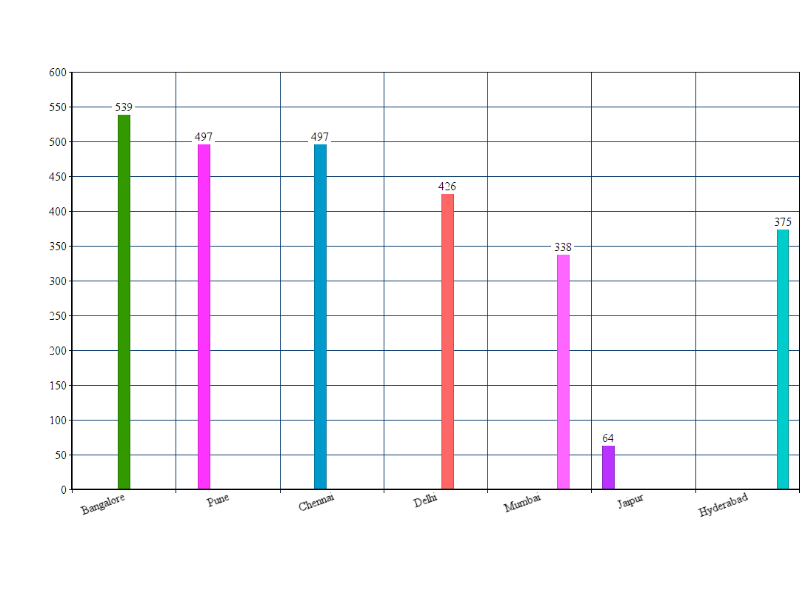
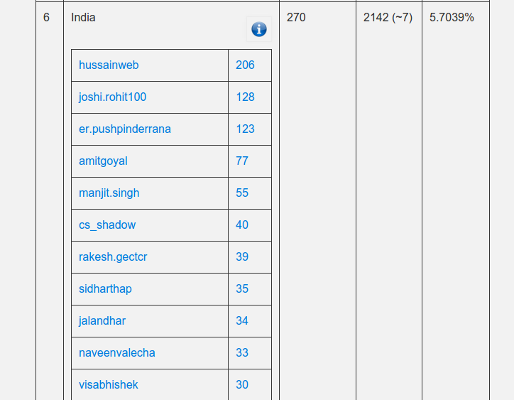

Drupal Bangalore Community
The journey of a Dupal Community from
few people to 500+ community
Presented by Chakrapani R & Gokul NK
Chakrapani R
- From Bangalore
- Drupal architect at Azri Solutions
- Drupal since 2009
- Tinkering with Golang and Elixir
- Core contributor
- Contributions Lead at azri
- Involved with Drupal Bangalore
- Programme Team @DrupalconAsia
Gokul N K
- Graduated from Rashtreeya Vidyalaya (RVCE)
- From Hyderabad
- Drupal Architect at Azri Solutions
- Formerly a Java Developer @ Mindtree
- Drupal since 2011
- Lead Maintainer for Automatr Module
- Cofounder of Aziteez
- Bowling Addict
Overview
- What is Community
- Our story
- How we grew
- What do we mean by Contributions?
- Drupal Bangalore contributions
- Impact
- Tools we use
What is Drupal Community
- People
- Developer
- Site Builder
- Individuals/Teams who organize local events (meetups, trainings and code sprints)
- Drupal Evangelists
- Business Development Teams
HISTORY
Or let us just say our Story
The Beginning
- It started with a Meetup in May 2010.
- Anil Sagar
- 4 attendees
The First Few Events
- And they continued to organize few more meetups
- Chakrapani joined Anil with D7 release party
Regular Meetups
Then Gokul NK joined the party in Nov 2011
Chakrapani and Gokul NK continued to organize meetups regulary

Drupal Global Training Days
The Last Saturday of Every Month
The Team Grows
- Starting in late 2012 Safwan Erooth and Sai Tanay joined the group.
Early Adopters from Bangalore
- Hussain goes from passive mode to active mode
- Mrs Jaya & VishnuVijayan
Recent Additions
- Sudhish and Neeraj become an active part and played critical roles in organizing Drupal Camp Bangalore
The list goes on
Thanks to all the community members who were part of our journey and supported us throughout.
Few regular community members to note: Vishnu, Karteek, Dhrubjyoti, KumarShanu, Saif, Allabakash, Avinash and many more..
How We Grew?
- Consistent Meetups
- Global Training Days
- Code Sprints
- Involvement and support from the community members
- Active participation from corporates
- Partnerships with non-profits like FSMK & IEEE
Tools We Use
- Drupal Groups


Contributions is more than Code
- What do we mean by Contributions?
- Core Contributions
- Contributed Modules
- Patches and Rerolls
- Documentation Edits
- Testing
- Comments and reviews on Issue Queues
Organizing Drupal Events
- Meetups
- Trainings
- Code Sprints
- Drupal Camps
- Mentoring
- Speaking
Drupal Bangalore & Contributions
Biggest community in India (ref: g.d.o)
Highest number of individual commit mentions
Huge growth in number of contributions

And
- Speakers at every drupalcamp in India
- Mentors at Drupalcamps & Drupalcons
- 4 sessions in Drupalcon Asia
- Part of programme team for Drupalcon Asia
- Received scholarships & Grants for the contribution towards community & code respectively
Drupalcamp Bangalore
- July 2015
- 500+ attendees
- 40+ Cities
- Great support from local organizations
- Axelerant, Azri, TCS, Valuebound etc,.
Our Suggestions
- Be consistent
- Build partnerships
- Conduct trainings in Educational institutions
- Drupal Association
- Attend Drupal camps and Drupalcons
- Reach out to other Drupal Communities. They would be happy to help
What's Next
- Drupalcamp 2016!
Thank You!
Chakrapani R / Gokul NK
On Behalf of Drupal Bangalore Community